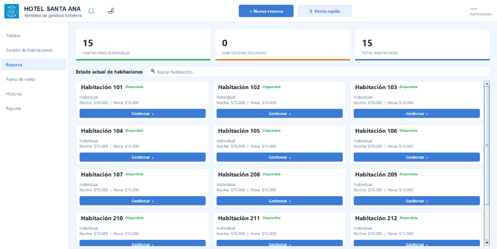
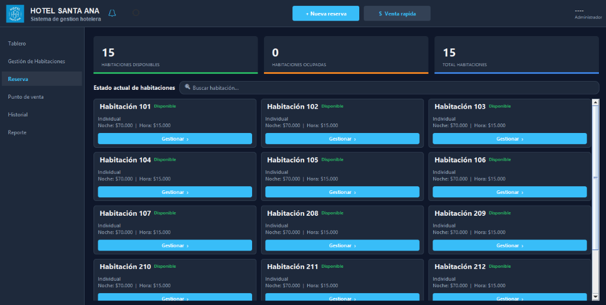

UI / Componentes
Temas visuales, formateo estricto de fechas, formularios y validaciones de la interfaz gráfica.
1. ThemeManager — Modo Oscuro "Dark Blue"
El sistema incluye un alternador de tema claro/oscuro implementado con el patrón Observer.
- ThemeManager: Clase central que almacena el tema activo (
LIGHToDARK) y notifica a todos los oyentes registrados medianteThemeListener. - ThemeListener: Interfaz que implementa cada ventana para recibir actualizaciones en tiempo real cuando el usuario cambia de tema.
- Los colores se definen mediante constantes en
ThemeManager:getBackground(),getPanelBackground(),getPrimary(),getTextPrimary(),getTextSecondary(),getBorder().

Interfaz Modo Claro

Interfaz Modo Oscuro "Dark Blue"
2. DateUtil — Formateo Estricto de Fechas
Las consultas SQL de disponibilidad de habitaciones comparan fechas como texto ISO (fecha_entrada || ' ' || hora_entrada). Para que esta comparación funcione correctamente, todas las fechas deben estar en formato yyyy-MM-dd HH:mm.
DateUtil centraliza el formateo usando java.time.format.DateTimeFormatter, reemplazando SimpleDateFormat en toda la capa de UI. Cualquier string que no cumpla con el formato ISO lanza una excepción en vez de pasar corrupto a la consulta SQL.
private static final DateTimeFormatter FMT_FECHA = DateTimeFormatter.ofPattern("yyyy-MM-dd");
private static final DateTimeFormatter FMT_HORA = DateTimeFormatter.ofPattern("HH:mm");
public static String formatearFecha(Date d) {
return d.toInstant().atZone(ZoneId.systemDefault())
.toLocalDate().format(FMT_FECHA);
}
public static String formatearHora(Date d) {
return d.toInstant().atZone(ZoneId.systemDefault())
.toLocalTime().format(FMT_HORA);
}Archivos que usan DateUtil:
NuevaReservaDialog.java—formatearFecha()yformatearHora()para enviar fechas al DAOHistorialPanel.java—aplicarFiltros()para filtrar por rango de fechasTableroPanel.java— alertas de checkout vencido y carga de próximas reservas
3. Formularios y Validaciones
Nueva Reserva (NuevaReservaDialog)
- Selector de fechas con
JDateChoosery spinner de hora. - Tres tipos de estadía: Una Noche, Pasadía, Indefinido.
- Validaciones estrictas: cédula numérica, nombre solo letras, teléfono numérico, correo con formato, anticipo no negativo ni superior al total.
- Autocompletado de datos del cliente al digitar la cédula.
- Filtro de habitaciones por tipo.
ReservaPanel — Vista Calendario y Listado
ReservaPanel ahora ofrece dos modos de visualización intercambiables mediante botones en la barra superior:
- Calendario: Vista mensual con bloques de color por estado (Activa=verde, Completada=púrpura, Cancelada=rojo). Cada bloque muestra el nombre del huésped y la habitación. Click para ver detalle.
- Listado: Tabla (
JTable) con columnas ID, Cliente, Documento, Habitación, Entrada, Salida, Estado. Incluye buscador en tiempo real y doble click para abrir detalle/edición.
ReservaFrame — Formulario Completo de Reserva
ReservaFrame es un formulario independiente con todos los datos de huésped, fechas, pago y selección de habitación. El botón "Confirmar Reserva" ahora:
- Valida campos obligatorios (nombre, identificación, habitación, fechas).
- Busca o crea automáticamente el cliente por documento (relación cliente-habitación).
- Llama a
ReservaDAO.crear()para guardar en BD. - Registra la actividad en el historial como tipo "Reserva".
- Navega al dashboard principal al completarse.
Las tarjetas de habitación tienen selección visual con borde resaltado en color primario.
Actualizar Reserva
Las reservas activas se pueden modificar desde el diálogo de detalle:
- Nuevo botón "Actualizar Reserva" en el diálogo de detalle de reservas activas.
- Formulario pre-rellenado con campos editables: huésped, fechas, horas, anticipo y estado.
- Llama a
ReservaDAO.actualizar()que actualiza fechas, horas, estado y anticipo en BD. - Registra la actualización en el historial como tipo "Actualizacion".
- Refresca automáticamente el panel de reservas y notifica cambios al dashboard.
Gestión de Usuarios (GestionUsuarioPanel + UsuarioDialog)
- CRUD completo con restricciones por rol: máximo 2 Administradores y 3 Recepcionistas.
- En edición, el campo de contraseña no se pre-rellena. Si se deja vacío, conserva la actual.
- Validación de duplicados en nombre de usuario.
ErrorUtil — Manejo de Errores de BD
Antes, los errores SQL se imprimían en consola sin que el usuario se enterara. Ahora:
DatabaseException(RuntimeException) envuelveSQLExceptiony se propaga desde los DAOs.ErrorUtil.mostrarError(Component, String, DatabaseException)muestra unJOptionPanecon el mensaje de error y el contexto de la operación.ApplicationMaintiene un manejador global de excepciones no capturadas en el EDT.
Paneles que capturan y muestran errores de BD:
LoginController— error de autenticaciónGestionUsuarioPanel— CRUD de usuariosGestHabitacionPanel— CRUD de habitacionesHistorialPanel— búsqueda en historialReportePanel— reportes y cierre de mes
HistorialPanel — Actividades del Sistema
El panel de Historial agrupa las actividades por fecha y tipo. Los tipos disponibles son:
- Reserva — azul
- Checkout — verde
- Cancelacion — rojo
- Habitacion — naranja
- Login — púrpura (intentos fallidos de inicio de sesión, tanto desde la API REST como desde la UI de escritorio)
- Sistema — gris
Los intentos fallidos registran el nombre de usuario utilizado, permitiendo identificar intentos de acceso no autorizados.